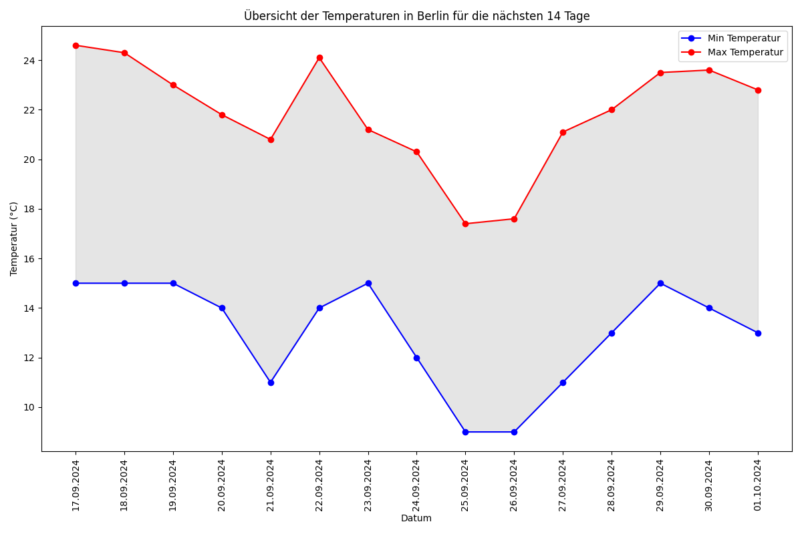

14-Day Weather Forecast for Berlin
Datum: 16.09.2024
Min-Temp: 13.0°C, Max-Temp: 21.7°C
Regenwahrscheinlichkeit: 45.0%, Windgeschwindigkeit: 27.7 km/h
Datum: 17.09.2024
Min-Temp: 14.2°C, Max-Temp: 25.2°C
Regenwahrscheinlichkeit: 0.0%, Windgeschwindigkeit: 13.7 km/h
Datum: 18.09.2024
Min-Temp: 14.5°C, Max-Temp: 24.8°C
Regenwahrscheinlichkeit: 0.0%, Windgeschwindigkeit: 12.2 km/h
Datum: 19.09.2024
Min-Temp: 16.1°C, Max-Temp: 22.3°C
Regenwahrscheinlichkeit: 3.0%, Windgeschwindigkeit: 13.7 km/h
Datum: 20.09.2024
Min-Temp: 13.6°C, Max-Temp: 21.8°C
Regenwahrscheinlichkeit: 0.0%, Windgeschwindigkeit: 16.9 km/h
Datum: 21.09.2024
Min-Temp: 14.3°C, Max-Temp: 24.6°C
Regenwahrscheinlichkeit: 0.0%, Windgeschwindigkeit: 15.8 km/h
Datum: 22.09.2024
Min-Temp: 15.0°C, Max-Temp: 23.3°C
Regenwahrscheinlichkeit: 0.0%, Windgeschwindigkeit: 14.8 km/h
Datum: 23.09.2024
Min-Temp: 14.6°C, Max-Temp: 23.7°C
Regenwahrscheinlichkeit: 0.0%, Windgeschwindigkeit: 10.8 km/h
Datum: 24.09.2024
Min-Temp: 15.9°C, Max-Temp: 23.8°C
Regenwahrscheinlichkeit: 0.0%, Windgeschwindigkeit: 11.2 km/h
Datum: 25.09.2024
Min-Temp: 14.6°C, Max-Temp: 17.4°C
Regenwahrscheinlichkeit: 109.0%, Windgeschwindigkeit: 29.5 km/h
Datum: 26.09.2024
Min-Temp: 12.5°C, Max-Temp: 19.3°C
Regenwahrscheinlichkeit: 2.0%, Windgeschwindigkeit: 27.6 km/h
Datum: 27.09.2024
Min-Temp: 16.4°C, Max-Temp: 20.7°C
Regenwahrscheinlichkeit: 14.0%, Windgeschwindigkeit: 19.1 km/h
Datum: 28.09.2024
Min-Temp: 13.0°C, Max-Temp: 19.6°C
Regenwahrscheinlichkeit: 0.0%, Windgeschwindigkeit: 11.8 km/h
Datum: 29.09.2024
Min-Temp: 13.3°C, Max-Temp: 24.1°C
Regenwahrscheinlichkeit: 0.0%, Windgeschwindigkeit: 14.0 km/h
Datum: 30.09.2024
Min-Temp: 16.9°C, Max-Temp: 21.8°C
Regenwahrscheinlichkeit: 47.0%, Windgeschwindigkeit: 10.6 km/h
Temperature Chart
